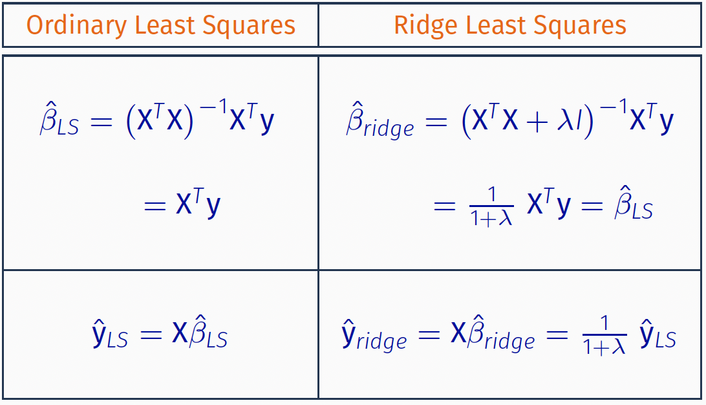

3.4 Ridge Regression
Ridge regression assumes that after normalization, some of the regression coefficients should not be very large. Ridge regression is very useful when you have collinearity and the LS regression coefficients are unstable.
Ridge Regression
The idea of the method is to use a penalized regression by adding a penalty term to the LS minimization problem : \[\text{minimize }\, (y-X \beta)^T(y-X \beta) + \lambda \sum_j \beta_j^2\] for some \(\lambda \ge 0\). The penalty term is \(\sum_j \beta_j^2\).
For the method to be more effective, we prefer to standardize the predictors first (centered by their means and scaled by their standard deviations) and center the response \(y\) as well. A big benefit of the ridge regression is that we can easily obtain closed-form solutions for the \(\beta\) coefficients. Indeed, solving the minimization problem we get: \[\hat{\beta}_{\text{Ridge}}=(X^T X+\underbrace{\lambda I}_{\text{ridge}})^{-1} X^T y\] Note that the extra term \(\lambda I\) or ridge in the \(X^\top X\) matrix.
Note that when \(\lambda=0\) the ridge regression estimation problem reduces to the standard least squares problem, while when \(\lambda \rightarrow \infty\), \(\hat{\beta} \rightarrow \mathbf{0}\). The value of \(\lambda\) can be also chosen using automated methods such as Generalized Cross-Validation (GCV) (similar to Cross-Validation). The main disadvantage of the ridge regression estimators is that they are biased.
Ridge was initially introduced to address multicollinearity issues, by adding a non-negative constant to the diagonal of the design matrix.
Ridge Regression LS Coefficients
If we assume that \(\mathbf{X}^T\mathbf{X} = \mathbf{I}_p\), that is the columns of the design matrix are orthogonal:

If the columns of the design matrix are not orthogonal, then we can run the regression against an orthonormal version of \(\mathbf{X}\), known as principal components analysis}, or singular value decomposition}.
Singular Value Decomposition (SVD)
SVD of \(\mathbf{X}_{n\times p}\)
\[\mathbf{X} = \mathbf{U}_{n\times p} \; \mathbf{D}_{p\times p}\, \mathbf{V}_{p\times p}^T\]
\(\mathbf{U}_{n\times p}\) columns are spanning the column space of \(\mathbf{X}\).
\(\mathbf{V}_{p\times p}\) spanning the row space of \(\mathbf{X}\).
\(\mathbf{D}_{p\times p}\) diagonal values with \(d_1 \geq \ldots \geq d_p \geq 0\) the singular values of \(\mathbf{X}\). If one or more \(d_j = 0\), then \(\mathbf{X}\) is singular.
Singular Value Decomposition (SVD)
SVD of Fitted Values: LS} vs. Ridge
The ridge estimate \(\hat{\beta}_{ridge}\) shrinks the LS estimate \(\hat{\beta}_{LS}\) by a factor of \(\frac{d_j^2}{d_j^2 + \lambda}\)}, and the smaller \(d_j^2\) the greater the shrinkage. \(\longrightarrow\) the smaller the eigenvalues the more the shrinkage.
Understanding the Shrinkage
Ridge regression computes the coordinates of \(\mathbf{y}\) with respect to an orthonormal basis \(\mathbf{U}\).
It shrinks the coordinates by the factors \(\frac{d_j^2}{d_j^2 + \lambda\), and the smaller \(d_j^2\) the greater the shrinkage.
The SVD of \(\mathbf{X}^T \mathbf{X}\) can be written as \[\mathbf{X}^T \mathbf{X} = \bigl(\mathbf{U}\; \mathbf{D}\;\mathbf{V}\bigr)^T\mathbf{U}\; \mathbf{D}\;\mathbf{V} = \mathbf{V} \; \mathbf{D}^2\; \mathbf{V}^T\] which is the eigen-decomposition of \(\mathbf{X}^T \mathbf{X}\).
The eigenvectors \(v_j\)} are also called the principal components directions} of the columns of \(\mathbf{X}\).
The first principal component} direction \(v_1\) has the property that \(z_1 = \mathbf{X} v_1 = \mathbf{u}_1 d_1\) has the largest sample variance} among all normalized linear combinations of the columns of \(\mathbf{X}\).
Ridge regression projects \(\mathbf{y}\) onto the principal components, and then shrinks the coefficients of the low–variance components more than the high-variance components.
Degrees of Freedom of a Regression Model
Computing the Degrees of Freedom \[df = \sum_{i=1}^{n} Cor \bigl(y_i,\; \hat{y}_i \bigr)\]
In linear regression : \(\hat{\mathbf{y}} = \mathbf{H} \mathbf{y}\), in which case \[df = \sum_{i=1}^{n} Cor \bigl(y_i,\; \hat{y}_i \bigr) = \sum_{i=1}^{n} H_{ii} = tr \bigl( \mathbf{H} \bigr) = p\] where (recall) \(\mathbf{H}\) is the hat matrix equal to \(\mathbf{X} \bigl( \mathbf{X}^T \mathbf{X} \bigr)^{-1} \mathbf{X}^T \mathbf{y}\).
In ridge regression: \(\hat{y} = \underbrace{ \mathbf{X} \bigl(\mathbf{X}^T \mathbf{X} + \lambda \mathbf{I} \bigr)^{-1} \mathbf{X}^T}_{:= \mathbf{S}_{\lambda}} \mathbf{y}\). So, the effective df of ridge
\[df(\lambda) = tr(\mathbf{S}_{\lambda}) = tr\Biggl( \sum_{j=1}^{p} \frac{d_j^2}{d_j^2 + \lambda} \mathbf{u}_i \mathbf{u}_i^T\Biggr) = \sum_{j=1}^{p} \frac{d_j^2}{d_j^2 + \lambda} \]
Complexity of Ridge Regression
Note that when \(\lambda=0\) the ridge regression estimation problem reduces to the standard LS problem.
When \(\lambda \rightarrow \infty\) \(\Rightarrow\) \(\boldsymbol{\hat{\beta}} = \Bigl(\mathbf{X}^T \mathbf{X} + \underbrace{\lambda I}_{\text{ridge}} \Bigr)^{-1} \mathbf{X}^T \mathbf{y} \rightarrow \mathbf{0}\).
Although \(\hat{\beta}_{ridge}\) is \(p\)-dimensional, the ridge regression doesn’t seem to use the full strength of the \(p\) covariates due to the shrinkage.
The DF of the ridge regression should be some continuous} number between 0 and \(p\), and is decreasing with respect to \(\lambda\).
Ridge regression coefficient estimates are biased}, the shrinkage can help reduce the variance, which could lead to an overall smaller \(MSE\).
LASSO Regression}
In this case the estimated \(\hat{\boldsymbol{\beta}}\) minimizes: \[\mbox{minimize } (y-X\boldsymbol{\beta})^\top(y-X\boldsymbol{\beta}) +\lambda \sum_j |\beta_j|\] for some \(\lambda \ge 0\). The penalty term is \(\sum_j |\beta_j|\) (\(L_1\) constraint).
In two-dimensions the constraint defines a square}. In higher dimensions it defines a polytope.
LASSO is useful when the response can be explained by few predictors with zero effect on the remaining predictors (LASSO is similar to a variable selection method).
When \(\beta_j=0\) the corresponding predictor is eliminated. This is not the case for ridge regression.
Obtaining the LASSO Solution
The LASSO solution is defined as \[\hat{\beta}_{lasso} = \arg \min_{\beta\in \mathbb{R}^{p}} \Bigl((y-X\boldsymbol{\beta})^\top(y-X\boldsymbol{\beta}) + \lambda \sum_j |\beta_j| \Bigr)\]
If we assume that \(\mathbf{X}^T\mathbf{X} = \mathbf{I}_p\)}, then \[\begin{align*} ||\mathbf{y} - \mathbf{X}\beta||^2 &= ||\mathbf{y} - \mathbf{X}\hat{\beta}_{LS} + \mathbf{X}\hat{\beta}_{LS} - \mathbf{X}\beta||^2\\ &=||\mathbf{y} - \mathbf{X}\hat{\beta}_{LS}||^2 + ||\mathbf{X}\hat{\beta}_{LS} - \mathbf{X}\beta||^2 \end{align*}\] where \[2 \bigl( \mathbf{y} - \mathbf{X}\hat{\beta}_{LS}\bigr)^T \bigl( \mathbf{X}\hat{\beta}_{LS} - \mathbf{X}\beta \bigr) = 2 \; r^T \; \bigl( \mathbf{X}\hat{\beta}_{LS} - \mathbf{X} \beta\bigr) =0\] %since then-dim vector in red (which is a linear combination of columns of \(\mathbf{X}\) no matter what value \(\beta\) takes) is in \(\mathcal{C}(\mathbf{X})\), therefore orthogonal to t he residual vector \(r\).
Obtaining the LASSO Solution
\[\begin{align*} \hat{\beta}_{lasso} &= \arg \min_{\beta\in \mathbb{R}^{p}} \Bigl( ||\mathbf{y}-\mathbf{X} \beta||^2 + \lambda |\beta| \Bigr)\\ &= \arg \min_{\beta\in \mathbb{R}^{p}} \Bigl( ||\mathbf{X} \hat{\beta}_{ls} -\mathbf{X} \beta||^2 + \lambda |\beta| \Bigr)\\ &= \arg \min_{\beta\in \mathbb{R}^{p}} \Bigl( \bigl( \hat{\beta}_{LS} - \beta \bigr)^T \mathbf{X}^T \mathbf{X} \bigl( \hat{\beta}_{LS} - \beta \bigr) + \lambda |\beta| \Bigr)\\ &= \arg \min_{\beta\in \mathbb{R}^{p}} \Bigl( \bigl( \hat{\beta}_{LS} - \beta \bigr)^T \bigl( \hat{\beta}_{LS} - \beta \bigr) + \lambda |\beta| \Bigr)\\ &= \arg \min_{\beta_1, \ldots, \beta_p} \sum_{i=1}^{p} \Bigl( \bigl( \beta_{j} - \hat{\beta}_{j}^{ls} \bigr)^2 + \lambda |\beta_j| \Bigr)\\ \end{align*}\] So, we can solve the optimal \(\beta_j\) for each of \(j=1, \ldots, p\) separately } by solving the following generic problem: \[\arg \min_{x} \bigl( x-a \bigr )^2 + \lambda |x|,\,\, \lambda >0\]
How to solve an one-dim LASSO? Define \[f(x) = \bigl( x-a \bigr )^2 + \lambda |x|,\] where \(a\in\mathbb{R}\) and \(\lambda >0\).
How to find \(x^*\) that minimizes \(f(x)\)?
The solution} \(x^*\) must satisfy \[\begin{align*} 0 &= \frac{\partial}{\partial x} \bigl(x^* - a \bigr)^2 + \lambda \;\frac{\partial}{\partial x} |x^*| \\ & = 2\bigl(x^* - a \bigr) +\lambda z^* \end{align*}\] where \(z^*\) is the sub-gradient} of the absolute value function evaluated at \(x^*\), which equals to \(sign(x^*)\) if \(x^*\neq 0\) and any number in [-1,1], if \(x^*=0\).
How to solve an one-dim LASSO?
The minimizer of \(f(x) = \bigl( x-a \bigr )^2 + \lambda |x|\) is given by \[x^* = S_{\lambda/2}(}a)} = sign(a) \bigl(|a|-\lambda/2 \bigr)_{+} = \begin{cases} & a-\lambda/2, \text{ if } \,\, a \; >\lambda/2\\ & 0, \qquad \quad \text{ if } |a| \leq \lambda/2\\ & a+\lambda/2, \text{ if } \,\, a \; < -\lambda/2\\ \end{cases} \] \(S_{\lambda/2}(\cdot)\)} is often referred to as the soft-thresholding operator.
How to solve an one-dim LASSO?
When the design matrix \(\mathbf{X}\) is orthogonal, the LASSO solution is given by
\[\hat{\beta}_{j}^{lasso} = \begin{cases} & sign (\hat{\beta}_{j}^{ls} - \lambda/2), \text{ if }|\hat{\beta}_{j}^{ls}| > \lambda/2\\ & 0, \text{ if }|\hat{\beta}_{j}^{ls}| \leq \lambda/2\\ \end{cases} \]
A large \(\lambda\) will cause some of the coefficients to be exactly zero. So, LASSO does both variable (subset) selection and (soft) shrinkage.
LASSO regression
Remarks
Use LASSO when the effect of predictors is sparse. This means that only few predictors will have an effect on the response (e.g. gene expression data) or when number of predictors is large (\(p>n\))
Select \(t\) in the constraint \(\sum_{j=1}^p |\beta|_j\leq t\) by using Cross-Validation (CV).
As \(t\) increases, the number of predictors increases.
Comparing LASSO & Ridge Regression
Comparing LASSO & Ridge Regression
Comparing LASSO & Ridge Regression
LASSO selects a subset of predictors \(\longrightarrow\) some coefficients equal to zero.
Ridge regression performs better when the response is a function of many predictors with coefficients around the same size.
LASSO will perform better when a relatively small number of predictors have large coefficients and the rest are very small or equal to zero.
Since the number of predictors is never known a priori, cross-validation can be used to decide which approach is better for a particular data set.
LASSO with \(p>n\)
When \(\mathbf{X}\) is of full rank:
the LASSO solution is the minimizer of a convex} function over a convex} set
the LASSO solution is unique since the first term is a strictly convex function.
When \(\mathbf{X}\) is not of full rank, or when \(p>n\):
the first term is no longer strictly convex.
Then, \(\hat{\beta}_{lasso}\) may be
unique if \(\mathbf{X}_S\) is of full rank where \(S\) is selected variable set, or not unique, however \(\mathbf{X}\hat{\beta}_{lasso}\) and \(|\hat{\beta}_{lasso}|\) are still unique.